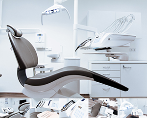

診所服務
微創植牙
一般牙科
齒顎矯正
數位瓷牙

牙周治療
兒童牙科
診所位置

鈦和牙醫診所
我們位於中和區的診所擁有現代化的設備和舒適的環境，提供全面的牙科服務，包括植牙、牙齒矯正和牙周治療。我們的專業團隊致力於為每位患者提供個人化的治療計劃，確保最佳的口腔健康。
台中鈦和牙醫診所
位於台中市的診所提供先進的數位化牙科技術，專注於微創植牙和數位瓷牙。我們的專業醫療團隊會根據患者的需求，提供最合適的治療方案，讓每位患者都能擁有健康美麗的笑容。
凱旋牙醫診所
凱旋牙醫診所專注於提供高品質的牙科護理，尤其是在兒童牙科和牙齒矯正方面。我們的診所環境友好且放鬆，讓每位患者在接受治療時都能感到舒適安心。
有全牙醫診所
有全牙醫診所提供全面的口腔健康服務，包括牙周治療和美學牙科。我們致力於為每位患者提供舒適的就診體驗，並以患者的健康為首要目標。
景美牙醫診所
景美牙醫診所以其專業的牙科服務和先進的技術而聞名。我們提供的服務包括牙齒美白、牙齒矯正和兒童牙科，致力於改善每位患者的口腔健康和美觀。
祥齡牙醫診所
祥齡牙醫診所提供高品質的口腔護理服務，特別注重牙周健康和預防性護理。我們的專業團隊致力於為患者提供最先進的治療技術和最舒適的診療環境。
Tiho Dental Clinic | Klinik Pergigian TIHO
(Dental Clinic Kuala Lumpur)
我們在吉隆坡的診所提供國際標準的牙科服務，專注於植牙和美學牙科。我們的目標是為每位患者提供最優質的護理，並確保他們在舒適的環境中獲得最佳的治療效果。